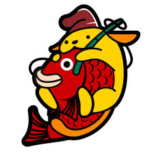
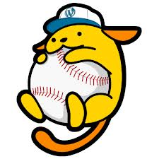
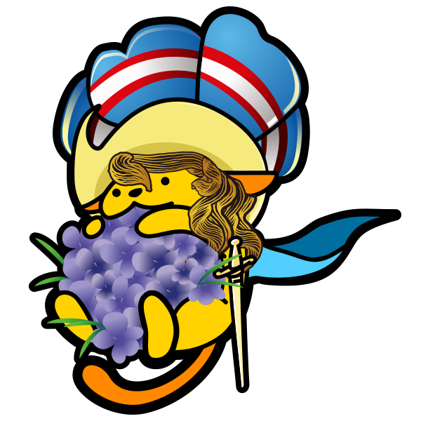
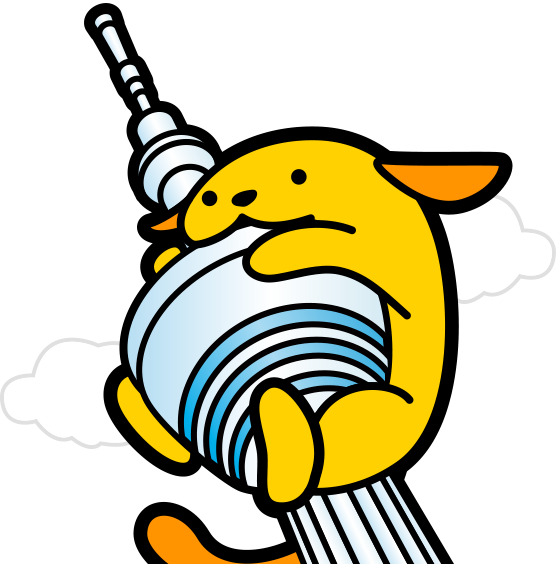
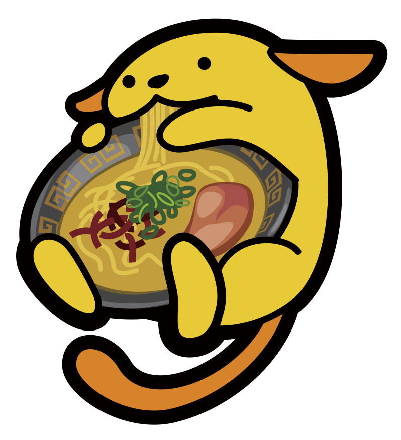
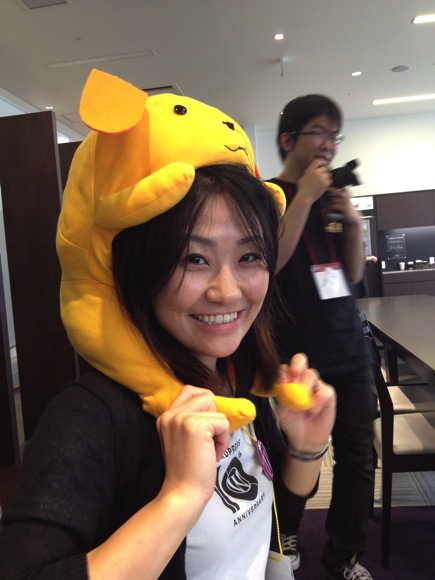
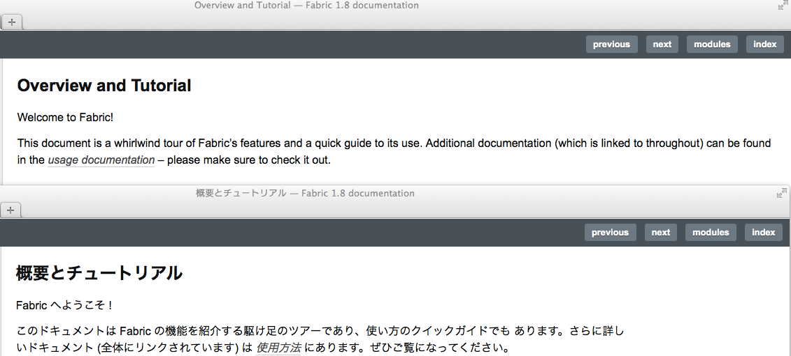

Projects on GitHub
Some projects I've been invovled with and hosted on GitHub.
Created by JOTAKI, Taisuke / @tekapo
Wapuu / わぷー
Wapuu is the official mascot character of the WordPress Japanese community, created by KANEUCHI Kazuko-san who lives in here Fukuoka!
Brothers and Sisters
Wapuu is licensed under GPL2 as same as WordPress, so there are many derivative works like Octocats.
Kaminarimon Wapuu
Kaminarimon Wapuu
Osakana Wapuu
Osakana Wapuu
Baseball Wapuu
Baseball Wapuu
Takoyaki Wapuu
Takoyaki Wapuu
Date Masamune Wapuu
Date Masamune Wapuu
Kabuki Wapuu
Kabuki Wapuu
Takarazuka Wapuu
Takarazuka Wapuu
Shikasenbei Wapuu
Shikasenbei Wapuu
Tokyo tower Wapuu
TTokyo tower Wapuu
Tonkotsu ramen Wapuu
Tonkotsu ramen Wapuu
A man trying to be wapuu

Wapuu on Nao-san
By the way,
Who the hell am I?
- Name: JOTAKI, Taisuke
- Commiter of the WordPress Japanese version.
- Japanese translator of the Nginx documentation.
- Work for DigitalCube Co. Ltd.
- Twitter: @tekapo
- Facebook: @taisuke
Japanese translation of the Fabric documentation
What is Fabric?
Fabric is a Python (2.5 or higher) library and command-line tool for streamlining the use of SSH for application deployment or systems administration tasks.
Why in Japanese?
Because I don't like reading English. ;-)
